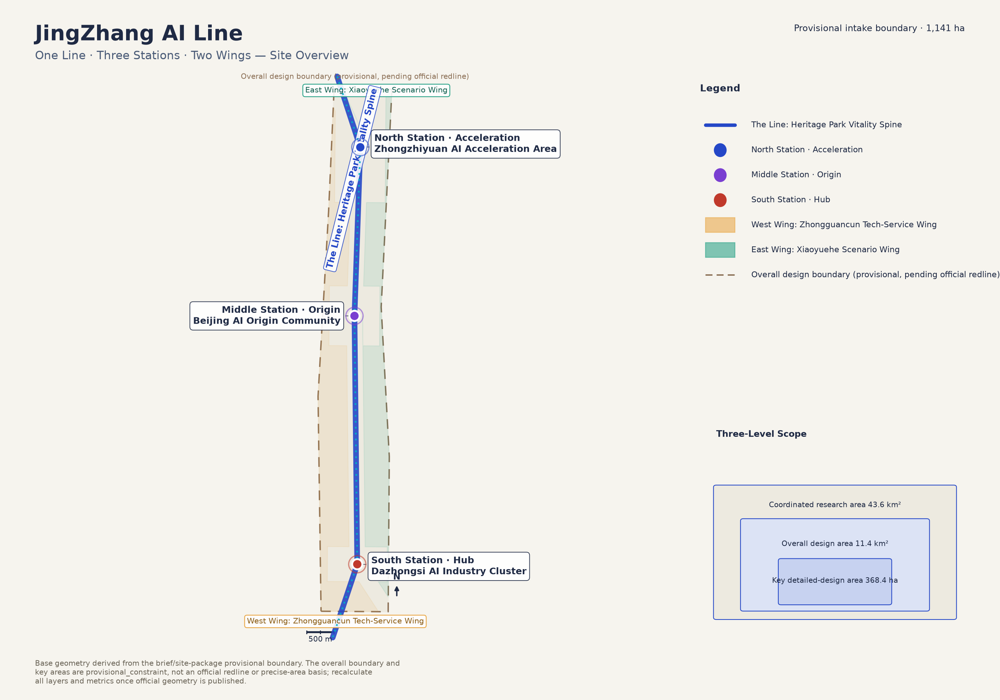
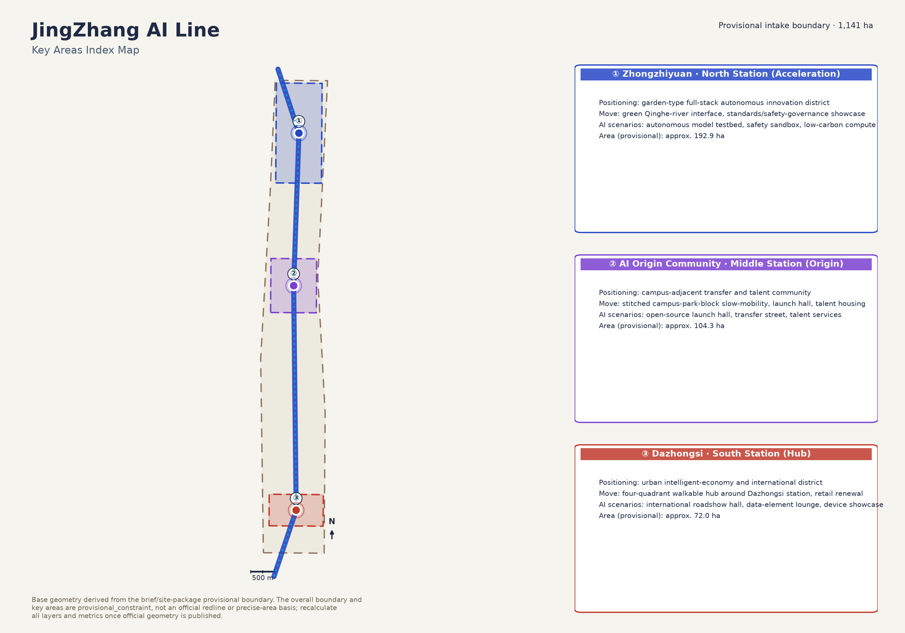
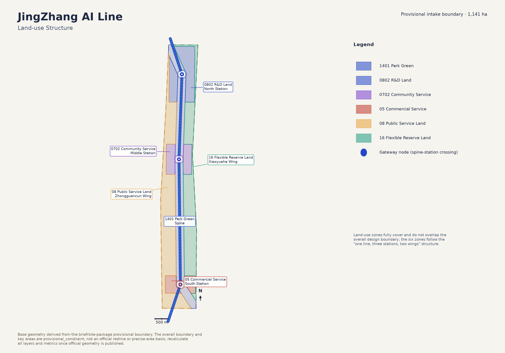
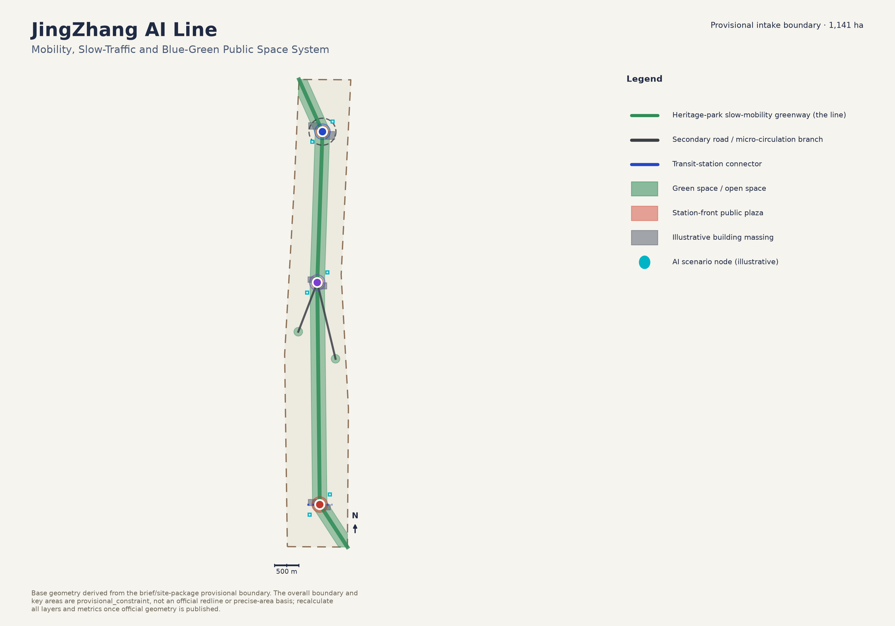
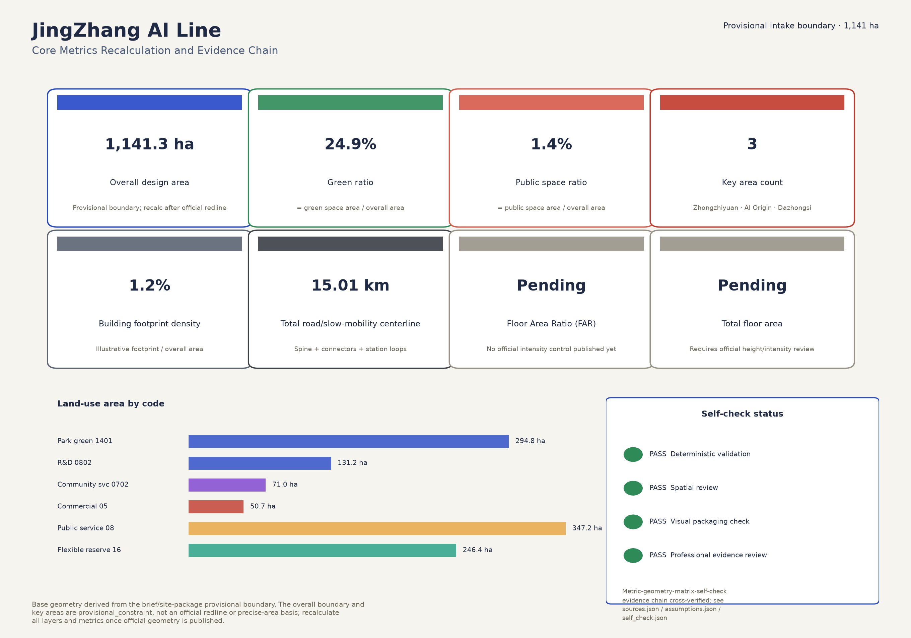

One Line, Three Stations, Two Wings — Centennial Jing-Zhang AI Innovation Belt (provisional intake boundary)
The JingZhang AI Line uses the Heritage Park vitality spine as its one line, threading three key stations — Zhongzhiyuan (North · Acceleration), AI Origin Community (Middle · Origin) and Dazhongsi (South · Hub) — flanked by the Zhongguancun tech-service wing (west) and the Xiaoyuehe scenario wing (east). The overall design boundary is a provisional, rough boundary pending the official redline.

The official three-level framework: the coordinated research area (industry ecosystem and future-city form), the overall design area (urban renewal at regulatory-plan depth), and the key detailed-design area (the three stations).
Index of the three key detailed-design areas; areas are provisional-boundary values, recalculated once the official redline is published.

Garden-type full-stack autonomous innovation district
Area (provisional, pending official redline): approx. 192.9 ha
Campus-adjacent transfer and talent community
Area (provisional, pending official redline): approx. 104.3 ha
Urban intelligent-economy and international district
Area (provisional, pending official redline): approx. 72.0 ha
Land-use zones fully cover and do not overlap the overall design boundary, matching the six zones of the one-line/three-station/two-wing structure.

| Zone | Area | Share of overall area |
|---|---|---|
| 1401 Park green (spine) | 294.8 ha | 25.8% |
| 0802 R&D land (North Station) | 131.2 ha | 11.5% |
| 0702 Community service (Middle Station) | 71.0 ha | 6.2% |
| 05 Commercial service (South Station) | 50.7 ha | 4.4% |
| 08 Public service land (West Wing) | 347.2 ha | 30.4% |
| 16 Flexible reserve land (East Wing) | 246.4 ha | 21.6% |
The line itself is the primary slow-mobility greenway; two connector roads reach the west and east wings, the south station overlays a four-quadrant transit connector, and the north station has a micro-circulation loop.

Green space is anchored on the spine plus two wing pocket parks; public space concentrates in three station-front plazas shared by residents and AI scenarios.
geometry/buildings.geojson contains illustrative massing blocks (one to two retain/renovate/new-build per station) to demonstrate the retain-renovate-demolish logic and footprint density, not a parcel-level survey.
A near/mid/long-term renewal project list; all entries are conceptual suggestions, not approved implementation commitments.
| No. | Project | Type | Phase | Key dependency |
|---|---|---|---|---|
| JZ-01 | Heritage-park slow-mobility gap stitching | Public space / mobility | Near-term pilot | Road red-line, under-bridge space, traffic-organization review |
| JZ-02 | Zhongzhiyuan Qinghe innovation interface | Blue-green space / industry showcase | Mid-term renewal | Riverine blue-line, ecological and flood-control conditions |
| JZ-03 | Origin-community campus transfer street | Urban renewal / industry services | Near-term pilot | Campus boundary, ownership, ground-floor program |
| JZ-04 | Dazhongsi station four-quadrant walkability | Transit integration / slow mobility | Mid-term renewal | Transit station, road intersection, municipal utilities |
| JZ-05 | AI public-service and edge-compute node | New infrastructure / public service | Long-term stewardship | Energy, compute, security and an operating entity |
| JZ-06 | Xiaoyuehe open scenario lab launch | Industry testbed / operations | Long-term stewardship | Flexible-land use agreement, scenario safety and human-review mechanism |
| JZ-07 | Global AI Week public route launch | Operations / branding | Mid-term renewal | Public-space permit, event safety, cleared copyrights |
At least ten AI scenario cards and five personas, mapping scenario-space-operation relationships and human-review boundaries.
Location: Middle Station · AI Origin Community
A launch/demo space for universities, open-source communities and startups to publish results and pitch.
Location: North Station · Zhongzhiyuan
Turns standards-setting, safety evaluation and red-teaming into a visitable, bookable, supervisable node.
Location: Along the vitality spine (illustrative)
An illustrative new-infrastructure prototype pairing public/enterprise services with low-carbon edge compute.
Location: Heritage Park Vitality Spine
Explainable wayfinding and low-intrusion sensing to spot mobility gaps and accessibility needs; aggregated data only.
Location: South Station · Dazhongsi
A showcase/negotiation/press space for agent, device and content-consumption companies to meet international partners.
Location: North Station, Qinghe riverfront
Combines green space, stormwater management, walking/cycling and AI showcases as the North Station's public living room.
Location: Middle Station · AI Origin Community
A street-level band of incubation, display, legal/IP and financing services supporting campus tech transfer.
Location: South Station · Dazhongsi
A compliant, authorized, auditable civic interface showcasing data-element and digital-asset circulation.
Location: West Wing transition band
Brings AI+ healthcare/education/legal/daily-service scenarios down to an operable, human-reviewable block scale.
Location: East Wing · Xiaoyuehe Scenario Wing
A bookable AI industry test-and-validate ground on flexible reserve land, opened to firms and the public in time slots.
Location: The spine's public-space system
A walkable, shareable route stringing together heritage culture, open-source community, industry showcase and roadshow.
| Persona | Typical need | Spatial response | Review boundary |
|---|---|---|---|
| Open-source developer | Publishing, collaboration, testing, community reputation | Origin-community launch hall, public code wall, late-night collaboration space | No individual behavior tracking; activity data is aggregated only |
| Startup team | Low-cost office, compute access, product test ground | Zhongzhiyuan shared testbed, edge-compute waystation, safety-sandbox consulting | Compute and data services require separate authorization |
| Enterprise visitor | Showcase, business meetings, international hosting, recruiting | Dazhongsi roadshow hall, transit connector, South-Station public space | Brand marks and case studies require cleared rights |
| Nearby resident | Commuting, leisure, community services, low-disruption renewal | Heritage-park slow loop, embedded community services, tiered night lighting | Resident profiles are never used for commercial targeting |
| University faculty and students | Tech transfer, cross-campus collaboration, everyday slow mobility | Campus-park slow-mobility stitching, transfer waystation, AI-education touchpoints | Campus data and research outputs require authorization |
| International observer / media | Understanding the narrative, shareable material, credible evidence | Global AI Week public route, Jing-Zhang culture tour, public evidence panels | Materials must disclose concept status and data gaps, never imply approval |
All values here match metrics.json; data-metric/data-value attributes support automated cross-checking.

Full task-response table for announcement 1.3/1.4/1.5 and agent-open-call tasks agent.1–agent.6; see compliance_matrix.json.
| ID | Task | Mandatory |
|---|---|---|
| 1.3.1 | 构建世界级AI创新生态体系 | Yes |
| 1.3.2 | 建设适配AI新质生产力的新型城市形态 | Yes |
| 1.3.3 | 打造全球AI创新人才向往的高品质城区 | Yes |
| 1.4.1 | 统筹研究范围 | Yes |
| 1.4.2 | 总体设计范围 | Yes |
| 1.4.3 | 重点区域范围 | Yes |
| 1.5.1.1 | 统筹研究范围：AI创新生态体系 | Yes |
| 1.5.1.2 | 统筹研究范围：适配人工智能的未来城市形态 | Yes |
| 1.5.2.1 | 总体设计范围：产业目标与功能布局 | Yes |
| 1.5.2.2 | 总体设计范围：城市更新总体框架 | Yes |
| 1.5.2.3 | 总体设计范围：交通轨道市政配套设施 | Yes |
| 1.5.2.4 | 总体设计范围：京张遗址公园活力带 | Yes |
| 1.5.2.5 | 总体设计范围：城市风貌 | Yes |
| 1.5.3.required | 重点区域范围详细设计必选项 | Yes |
| 1.5.3.1 | 众智园AI自主创新加速区 | Yes |
| 1.5.3.2 | 北京AI原点社区 | Yes |
| 1.5.3.3 | 大钟寺AI产业聚集区 | Yes |
| agent.1 | 一带总体概念与功能统筹方案设计 | Yes |
| agent.2 | AI全栈自主创新体系与世界级AI创新生态设计 | Yes |
| agent.3 | AI+场景赋能新范式与智能化AI活力城市设计 | Yes |
| agent.4 | AI公共空间、智能原生新业态与朝圣地标设计 | Yes |
| agent.5 | 百年京张文化、中关村文化与AI新文化融合叙事设计 | Yes |
| agent.6 | 一带全球AI创新活动体系与长期运营设计 | Yes |
Four local self-check gates run before submission; see self_check.json.
A PASS means the package meets the baseline for entering machine checks and content review; it does not imply official approval or a review outcome.
| ID | Type | Usage |
|---|---|---|
| SITE-PACKAGE | official_public | Project brief, enums, allowed design space, ranges, and schemas. |
| SOURCE-REGISTRY | repository_public_registry | Public/cleared/provisional source usability registry; distinguishes formal-ready, background-only, provisional-only, and needs-review materials. |
| PROCESSED-FACT-PACK | repository_processed_reference | Agent-readable navigation layer for scopes, required tasks, source-use boundaries, and missing-data checklist; not a new authority source. |
| BOUNDARY-SOURCE | agent_inferred_from_public_data | Submitted site boundary geometry source (provisional). |
| KEY-AREA-SOURCE | agent_inferred_from_public_data | Three required detailed-design key area boundaries (provisional). |
| OFFICIAL-ANNOUNCEMENT | official_public | Official announcement tasks, scope levels, key areas, language, and deliverable context. |
| AGENT-TASKBOOK | user_provided_cleared | Agent-facing open-call principles, six required agent tasks, scenario/branding/operation requirements, and boundary clause. |
| ID | Status | Statement |
|---|---|---|
| A-CONTROLS-001 | pending_professional_confirmation | Detailed regulatory controls, road redlines, ownership, municipal utilities, and engineering constraints must be confirmed from official attachments before statutory use. |
| A-LANDUSE-METHOD-001 | design_proposal_method | geometry/land_use.geojson partitions the provisional site boundary into a 300m-wide heritage-park spine, the three official key-area rectangles (net of the spine), and two side wings split by the spine centerline. This is the agent's conceptual zoning method for the 'one line, three stations, two wings' idea, not a statutory zoning map. |
| A-ROAD-WIDTH-001 | design_proposal_method | road_area_sqm and road_ratio in metrics.json are derived from road centerline length multiplied by schematic cross-section widths (greenway 10m, branch 14m, secondary 20m, transit_connection 18m), not from an approved road red-line or ROW. |
| A-BUILDING-ILLUS-001 | design_proposal_method | geometry/buildings.geojson contains six illustrative massing blocks (one to two per station) used to demonstrate retain/renovate/new-build logic and to compute a schematic building_density_ratio; it is not a parcel-level architectural footprint survey. |